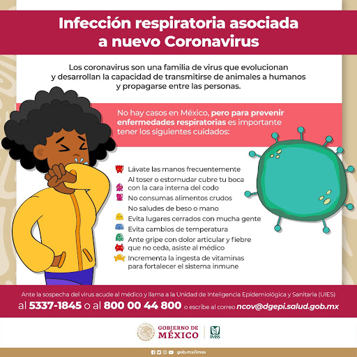

Prevencion
Lávese las manos frecuentemente con agua y jabón por al menos 20 segundos, especialmente después de haber estado en un lugar público, o después de sonarse la nariz, toser o estornudar.
Si no hay agua y jabón fácilmente disponibles, use un desinfectante de manos que contenga al menos un 60 % de alcohol. Cubra todas las superficies de las manos y frótelas hasta que sienta que se secaron.
Evite tocarse los ojos, la nariz y la boca con las manos sin lavar.
Evite el contacto cercano con personas que estén enfermas.Mantenga una distancia entre usted y las otras personas si el COVID-19 se está propagando en su comunidad. Estos es especialmente importante para las personas que tengan un mayor riesgo de enfermarse gravemente.
Quédese en casa si está enfermo
Quédese en casa si está enfermo, excepto para conseguir atención médica. Sepa qué hacer si se enferma.
Cúbrase la boca y la nariz con un pañuelo desechable cuando tosa o estornude, o use la parte interna del codo.
Bote los pañuelos desechables que haya usado a la basura.
De inmediato, lávese las manos con agua y jabón por al menos 20 segundos. Si no hay agua y jabón fácilmente disponibles, límpiese las manos con un desinfectante de manos que contenga al menos un 60 % de alcohol.
Si está enfermo: Usted debería usar una mascarilla cuando esté cerca de otras personas (p. ej., compartiendo una habitación o un vehículo) y antes de entrar al consultorio de un proveedor de atención médica. Si no puede usar una mascarilla (por ejemplo, porque le causa dificultad para respirar), debe hacer todo lo posible por cubrirse la nariz y la boca al toser y estornudar, y las personas que lo estén cuidando deben ponerse una mascarilla si entran a su habitación. Sepa qué hacer si se enferma.
Si NO está enfermo: No necesita usar una mascarilla a menos que esté cuidando a alguien que está enfermo (y que no puede usar una). Es posible que las mascarillas empiecen a escasear y deberían reservarse para los cuidadores.
Limpie Y desinfecte las superficies que se tocan frecuentemente todo los días. Esto incluye las mesas, las manijas de las puertas, los interruptores de luz, los mesones, las barandas, los escritorios, los teléfonos, los teclados, los inodoros, los grifos, los lavamanos y los lavaplatos.
Si las superficies están sucias, límpielas: use agua y jabón o detergente antes de desinfectar.
